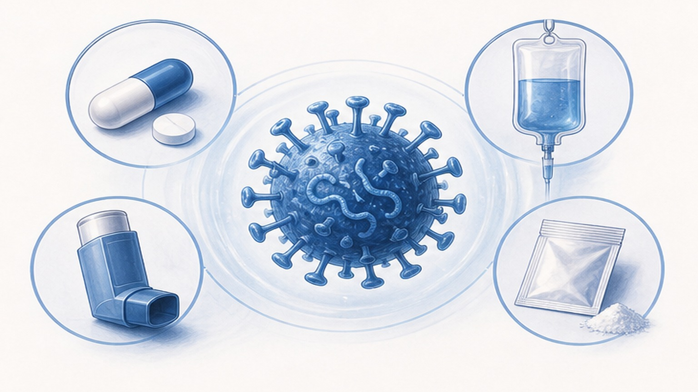
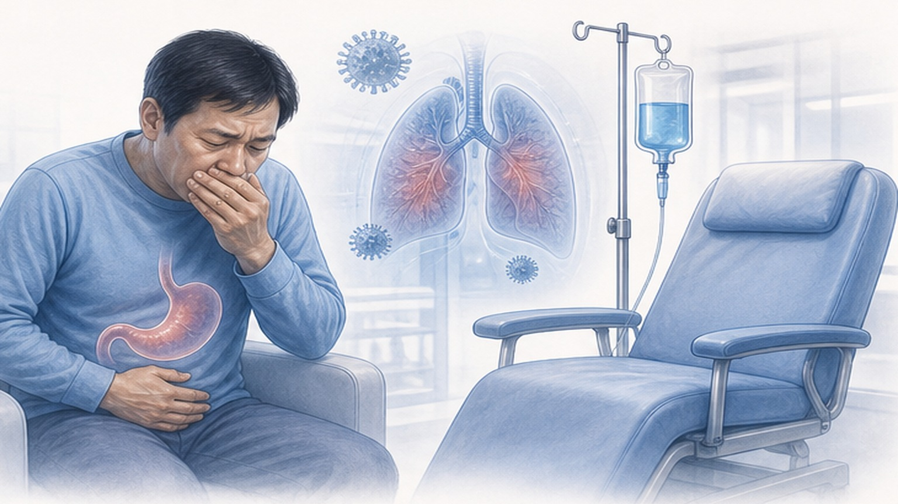
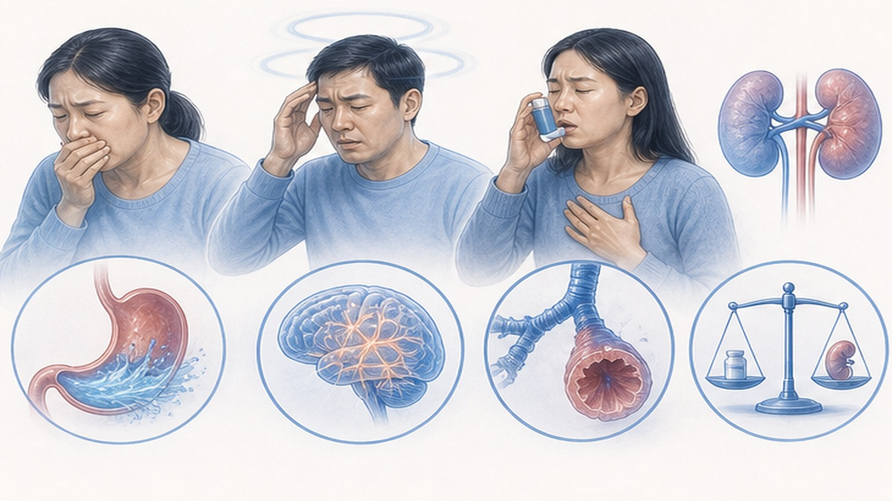

인플루엔자 항바이러스제,
어떤 약이 나에게 맞을까
오셀타미비르·자나미비르·페라미비르·발록사비르 — 4가지 항바이러스제를 한눈에 비교합니다
증상 시작 후 48시간 — 골든 타임
항바이러스제는 발열·근육통이 시작되고 48시간 이내에 투여할수록 효과가 큽니다
두 가지 계열, 네 가지 약물
대부분 같은 NA 억제제 계열이며, 발록사비르(조플루자)만 다른 기전을 가집니다
오셀타미비르·자나미비르·페라미비르는 모두 뉴라미니다제 억제제 (NA Inhibitor)로, 바이러스가 세포 밖으로 빠져나가는 단계를 차단합니다.
발록사비르(Baloxavir, 조플루자)는 캡 의존성 엔도뉴클레아제 억제제로, 바이러스가 세포 안에서 복제되는 단계를 차단합니다. 기전이 다르기 때문에 NA 억제제에 내성이 생긴 균주에도 작용할 수 있지만, 단독 투여 시 내성 변이가 비교적 빨리 생긴다는 단점도 보고됩니다. 핵심 차이는 약리 기전보다 투여 경로(경구·흡입·주사)와 투여 횟수(1회 vs 5일)입니다.
4가지 항바이러스제 한눈 비교
투여 경로·횟수·급여·특징을 정리했습니다

페라미비르 — 한 번 주사로 끝나는 강력한 옵션
증상 호전은 빠르고, 부작용은 적고, 5일간 매일 먹을 필요가 없습니다 — 환자 입장에서 명백한 장점
- 1회 주사로 종료 — 5일간 약 챙겨 먹을 부담 없음
- 해열 평균 ~37시간 — 오셀타미비르와 동등 또는 단축
- 증상 호전 ~59–78시간 — NA 억제제 비열등 입증
- GI 부작용 적음 — 구역·설사 5%대, 1회 노출로 경구 5일보다 부담 ↓
- 응급실·외래 즉시 투여 — 노인·고열·삼킴곤란 환자에 유리
- Kohno NEJM 2010 — 600mg 1회 = 오셀타미비르 5일 (비열등)
- 5일 × 2회 = 10회 복용 — 순응도 떨어지면 효과 ↓
- 해열 평균 ~28–38시간 — 페라미비르와 비슷
- 증상 호전 ~59–81시간 — 페라미비르와 비슷
- 구역·구토 10–15% — 5일간 노출로 GI 증상 가능성 ↑
- 구토 시 재투여 부담 — 페라미비르는 한 번이라 무관
- 국내 급여 1차 — 비용 가장 저렴 (보조 옵션)
주사(페라미비르)가 유리한 4가지 상황
경구약을 못 먹거나 5일 복약이 어려운 경우에 1회 정맥주사가 대안이 됩니다

약물별 주요 부작용 정리
대부분 경미하고 일과성이지만, 약을 고를 때 환자 상황에 맞춰 고려합니다

"이상행동" — 약 탓일까, 독감 탓일까
2025년 대규모 연구는 항바이러스제가 오히려 이상행동을 줄여준다고 보고했습니다
결론: 이상행동의 원인은 약물이 아니라 인플루엔자 감염 자체일 가능성이 높습니다. 오히려 항바이러스제 치료가 이상행동을 약 50% 줄였다는 결과가 나왔습니다.
일본은 전 세계 타미플루 사용량의 약 75%를 소비하는 나라입니다. 2007년 청소년 사용 제한 이후 다른 약(자나미비르)에서도 이상행동 보고가 증가하면서, 특정 약물이 아닌 독감 자체가 원인임이 시사되었고 2018년 사용 제한이 해제되었습니다. 그럼에도 불구하고, 모든 항바이러스제 투여 시 발열 후 2일간 보호자 감시는 필수입니다.
즉시 응급실 — 폐렴·중증 합병증 신호
고위험군(면역저하·만성질환·임산부)은 아래 증상 하나라도 나타나면 지체 없이 119
약 먹고 토했을 때 · 열이 안 떨어질 때
상황별 4단계 대응 — 30분 규칙과 48시간 규칙을 함께 기억하세요
오늘 꼭 기억할 핵심 8가지
약물 선택부터 복약·모니터링까지 한눈에 — 비용 차이도 함께
조기 치료와 적절한 모니터링이
독감 합병증을 막습니다
독감은 조기에 진단하고 48시간 안에 치료할수록 회복이 빠릅니다 — 빠른 회복을 응원합니다
광교중앙로 298, 4층
토요일 08:30~13:30
같은 자료를 다시 볼 수 있어요